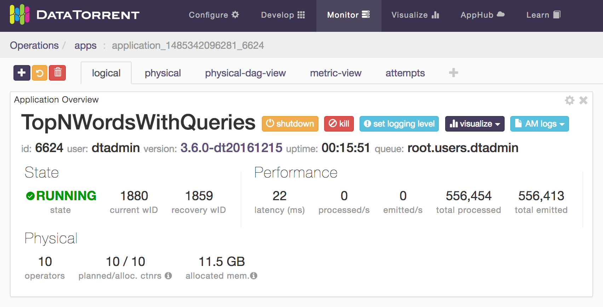

Monitoring top N words using dtManage
dtManage is an invaluable tool for monitoring the state of a running application as well as for troubleshooting problems.
Monitor the Application
To monitor the top N words application
- Log on to the Datatorrent Console (the default username and password
are both
dtadmin). - On the top navigation bar, click Monitor.
- Under Datatorrent Applications, check if the application started.
- Wait till the state entry changes to RUNNING.
- Click TopNWordsWithQueries to see a page with four tabs: logical, physical, physical-dag-view, and metric-view.
- Under StramEvents, ensure that all the operators have started.
DAGs and widgets
When monitoring an application, the logical view is selected by default, with the following six panels, also called widgets: Stram Events, Application Overview, Logical DAG, Logical Operators, Streams, and Metrics Chart. These panels can be resized, moved around, configured (using the gear wheel icon in the top-right corner), or removed (using the delete button in the top-right corner).
Logical view and associated widgets (panels)
This section describes the widgets that you see when you select the logical tab.
Stram Events
As shown in the screenshot above, this panel shows the lifecycle events of all the operators. If one of the operators fails, a white button labelled details appears next to the event; click on it for additional details about the failure.
Application Overview
This panel displays application properties such as state, number of operators, allocated memory, and the number of tuples processed. You can use the kill button to terminate the application. The visualize button allows you to create one or more custom dashboards to visualize the application output. 
Logical DAG
The logical DAG illustrates operators and their interconnections. You can customize the logical DAG view by selecting operator properties that are displayed above and below each operator.
To customize these properties
- Click an operator for which you want to display additional details.
- To display a detail on the top of this operator, click the Top list and select a metric.
- To display a detail at the bottom of this operator, click the Bottom list and select a metric.

Logical Operators
This panel displays a table with detailed information about each operator such as its name, the associated JAVA class, the number of tuples processed, and the number of tuples emitted.
Streams
This panel displays details of each stream such as the name, locality, source, and sinks.
Metrics Chart
This panel displays the number tuples processed and the number of bytes processed by some internal components. Since this application has not processed any tuples so far (no input file was provided), the green and blue lines coincide with the horizontal axis:
Physical view and associated widgets
The physical tab displays the Application Overview and Metrics Chart discussed above along with additional panels: Physical Operators and Containers. The Physical Operators table shows one row per physical operator. When partitioning is enabled, some operators can be replicated to achieve better resource utilization and hence better throughput so a single logical operator may correspond to multiple physical operators.
Physical Operators
Containers
For each operator, a crucial piece of information is the process (the Java Virtual Machine) running that operator. It is also called a container, and shown in a column with that name. Additional information about the container (such as the host on which it is running) can be gleaned from the matching row in the Containers table.
If the state of all the physical operators and containers is ACTIVE and green this is a healthy state. If the memory requirements for all the operators in the application exceeds the available memory in the cluster, you'll see these status values changing continually from ACTIVE to PENDING. This is an unhealthy state and, if it does not stabilize, your only option is to kill the application and reduce the memory needs or acquire more cluster resources.
The physical-dag-view
The physical-dag-view tab displays the Physical DAG widget, which shows all the partitioned copies of operators and their interconnections.
The metric-view
The metric-view tab displays only the Metrics Chart widget.
View application logs
When debugging applications, we are often faced with the task of examining log files. This can be cumbersome, especially in a distributed environment where logs can be scattered across multiple machines. dtManage simplifies this task by making all relevant logs accessible from the console.
For example, to examine logs for the FileWordCount operator, go to the physical tab of the application monitoring page and check the physical operator table to find the corresponding container. An example value might be 000010.
The numeric values in the container column are links that open a page
containing a table of all physical operators running in that container.
In the Container Overview panel, you should see a blue logs dropdown
button; click on it to see a menu containing three entries: dt.log, stderr,
and stdout.
All messages output using log4j classes will appear in dt.log
whereas messages written directly to the standard error or standard
output streams will appear in the other two entries. Choose the entry
you want to view.